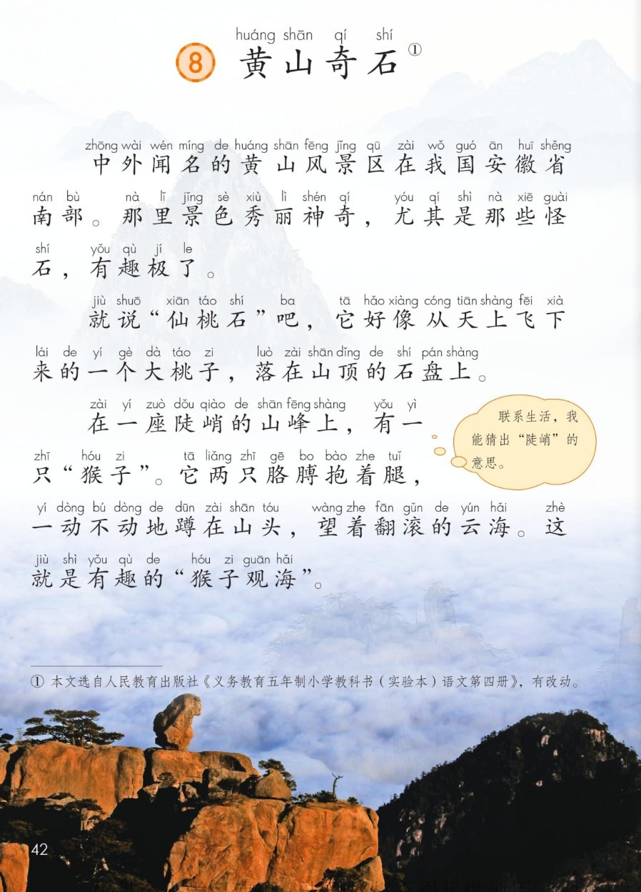
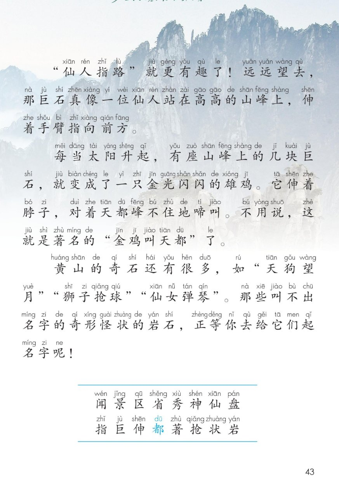
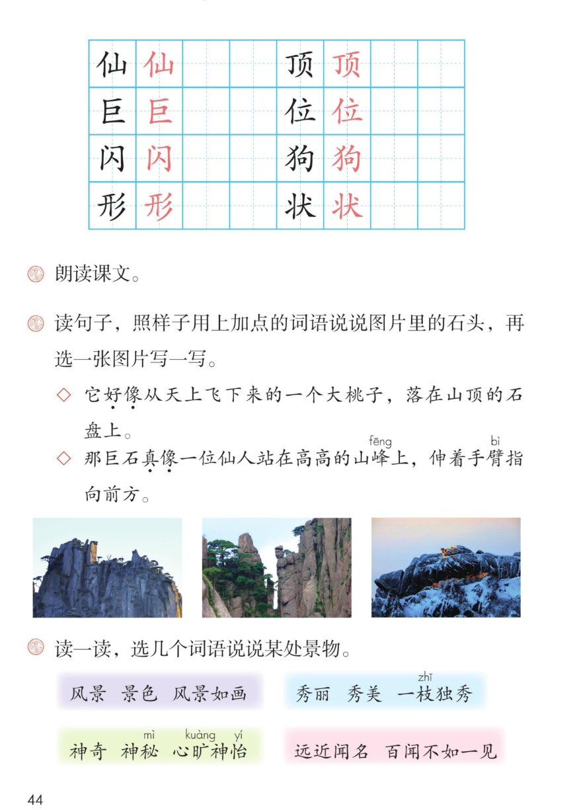

🏔 第 8 课《黄山奇石》· 有声图文带读
统编版语文 · 第四单元·阅读 · 课本 P42~44
课文 6 个自然段
会认字 16
会写字 8
听写词 10
近义词 4 组
深入理解 8 题
本课本领 按顺序介绍奇石
🎧 五步学（可随时点任意一句、一个字、一个词单独听）：
① 听读课文——一句一句读，读到哪一句哪一句发光；开「跟读」后读完一句留时间让你自己读。
② 学字词——16 个会认字、8 个会写字（含书写提示），点一个读一个。
③ 词语·听写·造句——听写 10 个词（读两遍→你写→报答案→听示范句），再听 4 组近义词辨析。
④ 深入理解——8 道题（认知 / 理解 / 运用 / 拓展），开放题答案不唯一，先想后看。
⑤ 介绍奇石·分角色——按顺序介绍四块奇石，再分角色朗读课文。
① 听读课文（点哪一句，读哪一句）点段前的 ①②③ 听整段
注音只标本课要认、要写的字，读音来自课本第 3 页生字表
🎤 朗读要求（老师标准）
① 读准字音，不添字、不漏字、不回读；
② 逗号稍停，句号停得长一点；
③ 感叹号读出惊叹的语气（声音往上提）；
④ 写奇石的句子读出神奇、有趣，像在给同学介绍；
⑤ “尤其是”后面稍停，把“那些怪石”突出来。
①中外闻名的黄山风景区在我国安徽省南部。那里景色秀丽神奇，尤其是那些怪石，有趣极了。
②就说“仙桃石”吧，它好像从天上飞下来的一个大桃子，落在山顶的石盘上。
③在一座陡峭的山峰上，有一只“猴子”。它两只胳膊抱着腿，一动不动地蹲在山头，望着翻滚的云海。这就是有趣的“猴子观海”。
④“仙人指路”就更有趣了！远远望去，那巨石真像一位仙人站在高高的山峰上，伸着手臂指向前方。
⑤每当太阳升起，有座山峰上的几块巨石，就变成了一只金光闪闪的雄鸡。它伸着脖子，对着天都峰不住地啼叫。不用说，这就是著名的“金鸡叫天都”了。
⑥黄山的奇石还有很多，如“天狗望月”“狮子抢球”“仙女弹琴”。那些叫不出名字的奇形怪状的岩石，正等你去给它们起名字呢！
🤔 想一想（点我可跳过）
课本的样子（点一张图，听读这一页）一张图听一页

第 42 页 · 课文 1~3 段

第 43 页 · 课文 4~6 段 + 生字表

第 44 页 · 会写字与课后题
📖 人教版《语文》二年级上册 · 课本第 42~44 页 · 图片仅供个人学习，版权归人民教育出版社所有
② 会认字（16 个）点一个字，听读音、词语和课文里的句子
仙
xiān
神仙 · 仙女
5 画 · 左右（亻）
左窄右宽，山要正
巨
jù
巨石 · 巨人
4 画 · 独体（匚）
上下两横要平，最后写竖折
闪
shǎn
闪光 · 闪电
5 画 · 半包围（门）
门要方正，人写小靠中间
形
xíng
形状 · 图形
7 画 · 左右（彡）
左边窄，三撇长短不一样
顶
dǐng
山顶 · 房顶
8 画 · 左右（页）
左窄右宽，末笔是点
位
wèi
一位 · 座位
7 画 · 左右（亻）
右边立的末横要长
狗
gǒu
天狗 · 小狗
8 画 · 左右（犭）
左窄右宽，横折钩要方正
状
zhuàng
形状 · 状态
7 画 · 左右（丬）
左两点一提要紧凑，撇捺舒展
③ 读一读，选几个词语说说某处景物（课后题）点一行，听读这一组词语
景风景 景色 风景如画
秀秀丽 秀美 一枝独秀
神神奇 神秘 心旷神怡
闻远近闻名 百闻不如一见
③ 听写（10 个词）读两遍 → 你在纸上写 → 报答案 → 听示范句
准备听写 · 共 10 个词
○ ○ ○
点下面的「开始听写」，听到一个词就写一个词。
③ 听写的词 · 造句示范点词听读，点句子听示范句，再自己说一句
1闻名课文词语
示范句：中外闻名的黄山风景区在我国安徽省南部。
✏️ 我也能说：哪里+很闻名
2秀丽课文词语
示范句：那里景色秀丽神奇。
✏️ 我也能说：什么+景色秀丽
3神奇课文词语
示范句：黄山的怪石又神奇又有趣。
✏️ 我也能说：什么+真神奇
4巨石课文词语
示范句：那巨石真像一位仙人站在高高的山峰上。
✏️ 我也能说：一块怎样的巨石+像什么
5山顶会写字
示范句：它好像从天上飞下来的一个大桃子，落在山顶的石盘上。
✏️ 我也能说：什么+在山顶上+做什么
6一位会写字
示范句：远远望去，巨石像一位仙人站在山峰上。
✏️ 我也能说：一位+谁+在做什么
7闪光会写字
示范句：几块巨石变成了一只金光闪闪的雄鸡。
✏️ 我也能说：什么+闪闪发光
8形状会写字
示范句：那些奇形怪状的岩石，正等你去给它们起名字。
✏️ 我也能说：什么+的形状+像什么
9著名课文词语
示范句：这就是著名的金鸡叫天都了。
✏️ 我也能说：哪里+是著名的什么
10仙人会写字
示范句：那巨石真像一位仙人站在高高的山峰上，伸着手臂指向前方。
✏️ 我也能说：什么+像一位仙人
③ 近义词辨析（4 组）相同点 / 不一样在哪 / 各造一句
闻名 — 著名
相同：都表示很有名，很多人都知道。
不一样：闻名常和“中外”“远近”连用，说一个地方名气大；著名多形容人、作品、地方，前面常加“很、最”。
闻名：黄山是中外闻名的风景区。
著名：李白是唐代著名的诗人。
秀丽 — 秀美
相同：都形容景色清秀美丽。
不一样：秀丽偏重清秀、好看，多写山水景色；秀美偏重柔美、精致，还能写人的字、人的模样。
秀丽：那里景色秀丽神奇。
秀美：西湖的景色十分秀美。
神奇 — 神秘
相同：都带一个“奇”字，都有奇妙、不一般的意思。
不一样：神奇是说奇妙得让人想不到，多写景色、本领；神秘是说藏起来、让人猜不透，多写地方、事情。
神奇：黄山的怪石真神奇。
神秘：海底是一个神秘的世界。
尤其 — 特别
相同：都表示在同类里更突出。
不一样：尤其多用在书面，后面常接“是”，说成“尤其是”；特别还能当形容词，说“特别的日子”。
尤其：我喜欢黄山，尤其是那些怪石。
特别：今天是个特别的日子。
③ 词语拓展（说一说，记一记）
课后词语风景 景色 风景如画 秀丽 秀美 一枝独秀
四字词语中外闻名 金光闪闪 奇形怪状 一动不动
打比方好像…… 真像…… 像……一样
写山写云陡峭 翻滚 不住地 远远望去
④ 深入理解（8 题 · 先想后看）标「答案不唯一」的题，说得有道理都对
认知黄山风景区在我国哪个省？在省的哪个方位？
看解析
🤔 想一想
解析：
安徽省，在省的南部。
💡 读介绍一个地方的文章，先把“在哪里”读清楚。
认知课文写到了哪几块有名的奇石？按课文顺序说一说。
看解析
🤔 想一想
解析：
仙桃石 → 猴子观海 → 仙人指路 → 金鸡叫天都
末尾还提到：天狗望月、狮子抢球、仙女弹琴。
💡 把四块奇石的名字连起来，就是课文的结构图。
理解课文把石头写成了大桃子、猴子、仙人、雄鸡，这样写有什么好处？
看解析
🤔 想一想
解析：
好处一：样子看得见——一说像大桃子，脑子里马上有画面。
好处二：读起来有趣——石头会抱腿、会啼叫，像真的活着。
💡 写景的时候，用“像什么”比只说“很好看”管用得多。
理解“陡峭”是什么意思？你是用什么办法猜出来的？
看解析
🤔 想一想
解析：
意思：山又高又陡，直上直下，不好爬。
猜法：看“高高的山峰”，再看图——崖壁几乎是直立的。
💡 遇到不认识的词，先看它前后的话，再想想生活里见过的样子。
理解写猴子的时候，为什么要说“一动不动”？
看解析
🤔 想一想
解析：
像石头：石头不会动，“一动不动”正合适。
又像猴子：它蹲着、抱着腿、望着云海，像真猴子在看风景。
💡 一个词既写对了石头，又写活了猴子，这就是好词。
运用照样子，用“好像”“真像”说说图片里的石头。（课后第 2 题）
看解析
🤔 想一想
解析：
句式：这块石头好像（真像）……，后面再说它在做什么。
示范：这块石头好像一只趴着的小狗，正朝着山下看。那块石头真像一位背着竹篓的老人，站在路边。
💡 答案不唯一：先看形状，再想它像什么、在做什么。
运用读一读，选几个词语说说某处景物。（课后第 3 题）
看解析
🤔 想一想
解析：
可选词语：风景 景色 风景如画 秀丽 秀美 一枝独秀 神奇 神秘 心旷神怡 远近闻名
说话顺序：先说是哪里 → 再说看到什么 → 最后说心里的感觉
💡 答案不唯一：词语用对了、句子说通顺了就好。
拓展课文最后说“正等你去给它们起名字呢”。如果让你给一块奇石起名字，你会起什么？为什么？
看解析
🤔 想一想
解析：
思路一：看它像哪种动物，就用动物的名字。
思路二：看它在做什么动作，把动作加到名字里。
💡 答案不唯一：只要说得出“像什么、为什么”，就是个好名字。
⑤ 按顺序介绍奇石（先说位置，再一块一块介绍）
💬 介绍支架：先说黄山在我国安徽省南部，怪石有趣极了 → 再说“仙桃石” → 接着说“猴子观海” → 然后说“仙人指路” → 最后说“金鸡叫天都”，还有很多奇石等你去起名字。
⑤ 分角色朗读（老师自选角色，台词全部取自课文原句）点一个角色，听他读的句子
🚩 小导游
开头介绍黄山，结尾邀请大家去起名字。
💬 要像小导游一样，读得响亮、热情，最后一句像在邀请客人。
🍑 仙桃石
“就说仙桃石吧，它好像从天上飞下来的一个大桃子……”
💬 要读出惊喜的语气，“好像”读得轻一点。
🐒 石猴子
“它两只胳膊抱着腿，一动不动地蹲在山头……”
💬 要读得慢一点、稳稳的，像石头真的不动。
🧙 仙人
“远远望去，那巨石真像一位仙人……”
💬 要“更有趣了”要读得兴奋，“指向前方”读得肯定有力。
🐔 金鸡
“它伸着脖子，对着天都峰不住地啼叫……”
💬 要声音亮一点，读出公鸡啼叫的响亮。